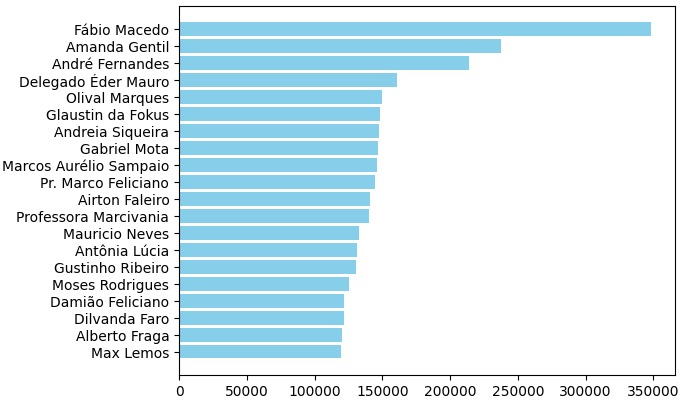
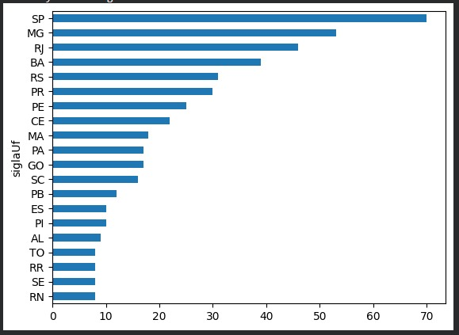
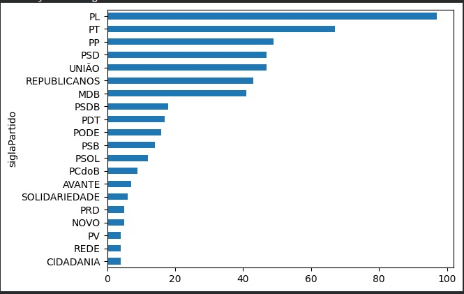

O gráfico mostra os gastos dos deputados no mandato atual. Quanto maior, mais gastos.

O gráfico mostra quantos deputados na câmara tem cada estado. Quanto maior, mais deputados.

O gráfico mostra quantos deputados na câmara tem cada partido. Quanto maior, mais deputados.